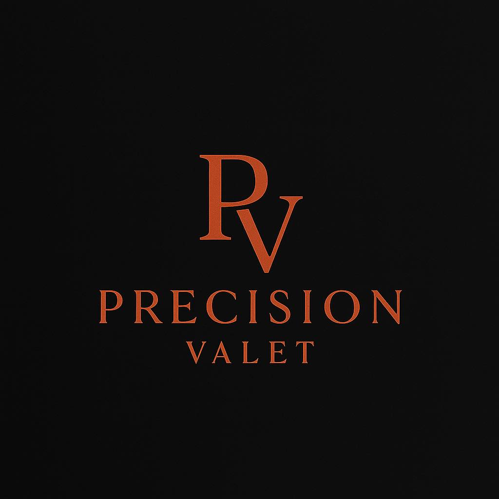
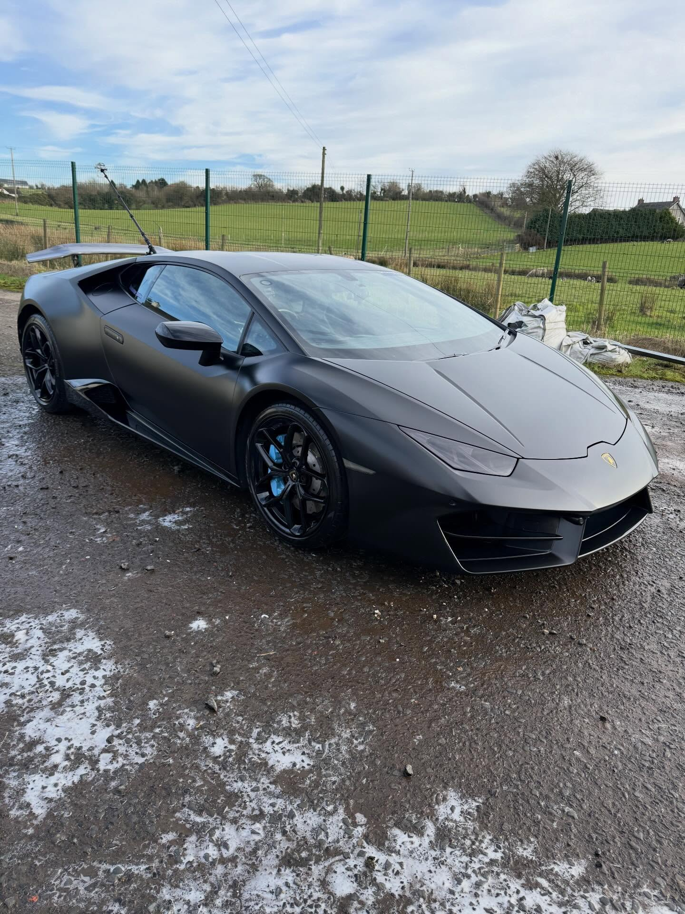
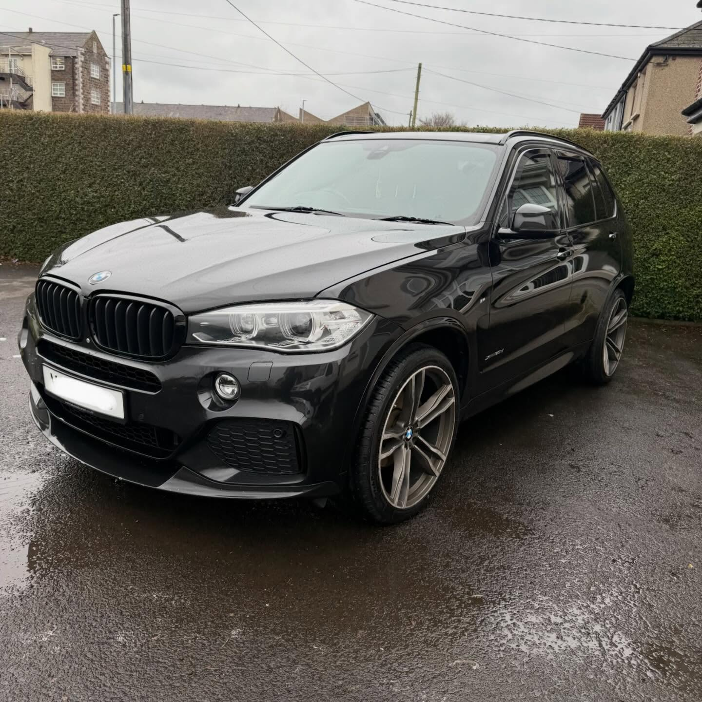
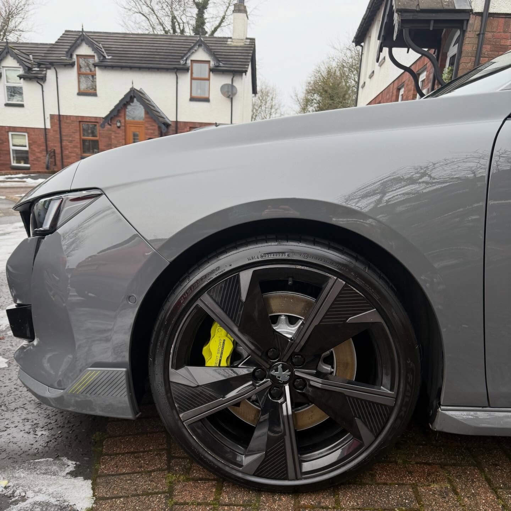
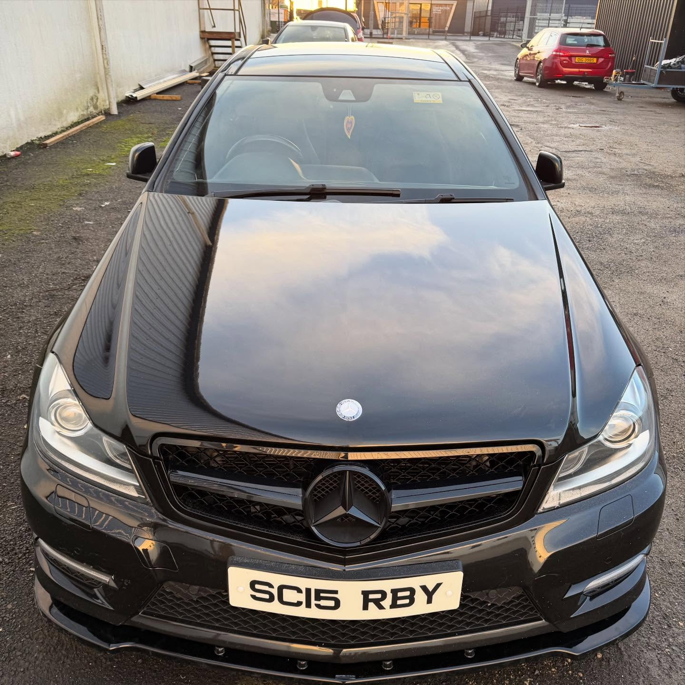
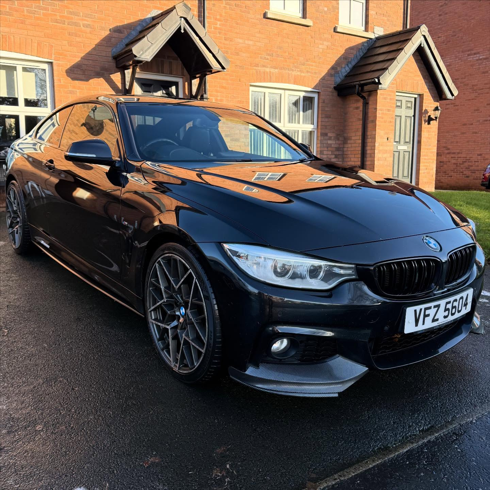

Supporting the growth of a premium car detailing startup

Precision Valet is a growing vehicle detailing and valeting business founded by Tiernan Connor Steele. As a startup entering a competitive market, the goal was to establish a strong and professional online presence that reflected the quality of the services offered.
When Tiernan first approached us, the business was in its early stages and required a modern website that could showcase his work, highlight his services, and help attract new customers.
Since launching the website, Precision Valet has continued to grow within the car detailing and valeting market. Tiernan has developed a reputation for professionalism and high attention to detail, delivering exceptional results for every vehicle he works on.
His portfolio now includes a wide range of vehicles, including high-value and luxury cars that require specialist care and precision detailing.
As the business continues to grow, Precision Valet is building a strong brand and an expanding client base, establishing itself as a trusted provider of premium car cleaning and detailing services.




